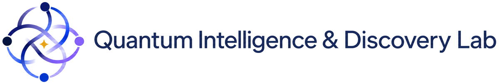

OMNI is built by the QID Lab at Nanyang Technological University.

OMNI welcomes contributions from researchers at any career stage and from any institution; enquiries may be addressed to yuxuan.du@ntu.edu.sg.